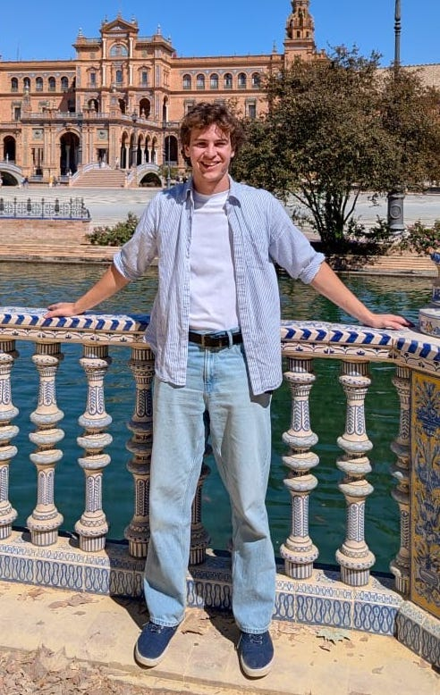

Ben Vyshedskiy
Cambridge · Harvard Medical School · Orbit
Hi, I am Ben, a third year natural science student at Cambridge! I love genetics, computational biology, discovering new world views, and working on startups which align investor capital with benefit to humanity.
I optimize my life to help others with the constraint of working on problems that interest me. If you want to discuss anything genetics or biotech related please reach out at: bv317 at cam.ac.uk

Research
2025
Prevailing positive selection, not purifying selection, of germline mtDNA mutations in human oocytes
bioRxiv preprint · December 31, 2025
Analyzing long-read CRISPR experiments with CRISPRLungo
bioRxiv preprint · October 21, 2025
2023
A novel, wave-shaped profile of germline selection of pathogenic mtDNA mutations is discovered by bypassing a classical statistical bias
bioRxiv preprint · November 21, 2023 (updated April 8, 2025)
Writing
Essays, commentary, and long-form thoughts.
Unfinished thoughts
Building
Active · Feb 2026 – Present
Orbit Engineering
Recruiting for Orbit.engineering.
Past · Dec 2025 – Feb 2026
Reached the semi-finals of the MIT Sloan Healthcare Innovations Prize (SHIP) 2026.